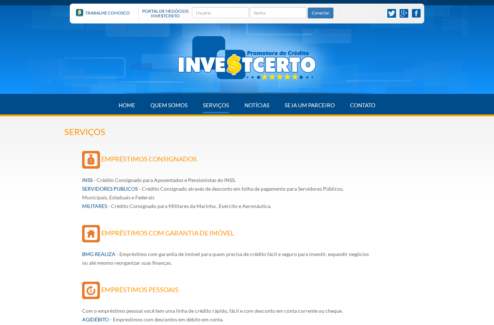
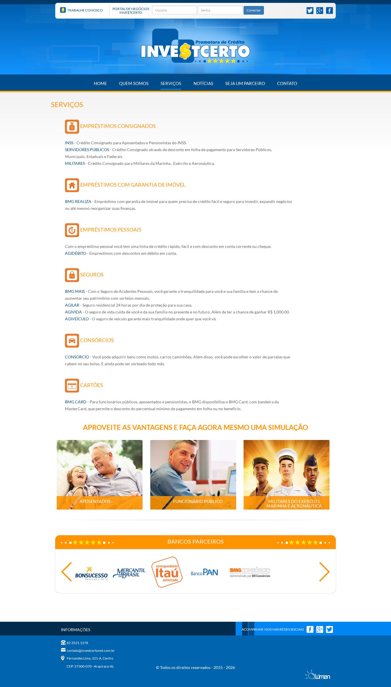

Sistema de Investigação de Marca e Identidade Online
http://investcertopromotora.com.br/servicos
Prioridade: MEDIUM · Cenário: B_AMBIGUOUS_COMMUNICATION · Revisão humana: PENDING
O estabelecimento comercial investigado é uma promotora de crédito ativa que atua na intermediação de produtos financeiros e lista a BV Financeira entre seus parceiros comerciais em contexto multibancos. Embora possua identidade própria consolidada e não mimetize o Banco BV, a ausência de identificação societária (CNPJ/Razão Social) e da declaração formal de correspondente bancário (art. 14 da Resolução CMN nº 4.935/2021) configura comunicação ambígua, requerendo revisão com prioridade média. [Revisor: CONFIRM] A InvestCerto qualifica-se como promotora de crédito (correspondente bancário) que oferece intermediação financeira de múltiplos bancos. Conforme o histórico indexado (E-DISC-001) e a seção de bancos parceiros (E-HEAD-13, E-SHOT-FULL), a empresa atua com instituições financeiras parceiras, porém omite dados regulatórios essenciais exigidos pela Resolução CMN 4.935/2021 (razão social societária, CNPJ, menção explícita à condição de correspondente bancário e ouvidoria). Trata-se de vínculo comercial não plenamente esclarecido em um agente do público-alvo prioritário, justificando a manutenção de REVIEW_REQUIRED.


| Ref | Tipo | Local | Conteúdo |
|---|---|---|---|
| E-URL | domain | url | URL final: http://investcertopromotora.com.br/servicos (domínio: investcertopromotora.com.br) |
| E-DISC-001 | text | search_index | Índice de busca (grounding): investcertopromotora.com.br — **URL:** `https://investcertopromotora.com.br` | **Produtos com a marca BV:** Empréstimo Consignado, Empréstimo Pessoal e Garantias | **Como utiliza a marca e elementos visuais:** Lista a "BV Financeira" em sua grade de instituições parceiras em página com botões de chamada para simulação online imediata | Não exibe na página institucional os dados obrigatórios de identificação de correspondente (Razão Social societária, CNPJ ativo e citação à norma do Banco Central) |
| E-SHOT-VIEWPORT | screenshot | viewport | evidence/C28df07bced/attempt-1/viewport.png (sha256 4b1643b29757e914…) |
| E-SHOT-FULL | screenshot | page | evidence/C28df07bced/attempt-1/fullpage.png (sha256 d6df7e2558937f3f…) |
| E-TITLE | title | head | Serviços - INVESTCERTO - Promotora de Crédito |
| E-META-1 | meta | head | description: Invest Certo - Promotora de Crédito |
| E-META-2 | meta | head | author: Agência Lúmen - contato@agencialumen.com.br |
| E-HEAD-1 | heading | page | PORTAL DE NEGÓCIOS INVE$TCERTO |
| E-HEAD-2 | heading | page | SERVIÇOS |
| E-HEAD-3 | heading | page | EMPRÉSTIMOS CONSIGNADOS |
| E-HEAD-4 | heading | page | EMPRÉSTIMOS COM GARANTIA DE IMÓVEL |
| E-HEAD-5 | heading | page | EMPRÉSTIMOS PESSOAIS |
| E-HEAD-6 | heading | page | SEGUROS |
| E-HEAD-7 | heading | page | CONSÓRCIOS |
| E-HEAD-8 | heading | page | CARTÕES |
| E-HEAD-9 | heading | page | APROVEITE AS VANTAGENS E FAÇA AGORA MESMO UMA SIMULAÇÃO |
| E-HEAD-10 | heading | page | APOSENTADOS |
| E-HEAD-11 | heading | page | FUNCIONÁRIO PÚBLICO |
| E-HEAD-12 | heading | page | MILITARES DO EXÉRCITO, MARINHA E AERONÁUTICA |
| E-HEAD-13 | heading | page | BANCOS PARCEIROS |
| E-HEAD-14 | heading | page | INFORMAÇÕES |
| E-HEAD-15 | heading | page | ACOMPANHE-NOS NAS REDES SOCIAIS |
| E-FOLD | text | viewport (acima da dobra) | Trabalhe conosco Portal de negócios INVE$TCERTO Usuário Senha Conectar Home Quem somos Serviços Notícias Seja um parceiro Contato Serviços Empréstimos consignados INSS - Crédito Consignado para Aposentados e Pensionistas do INSS. SERVIDORES PUBLICOS - Crédito Consignado através de desconto em folha de pagamento para Servidores Públicos, Municipais, Estaduais e Federais MILITARES - Crédito Consignado para Militares da Marinha , Exército e Aeronáutica. Empréstimos com garantia de imóvel BMG Realiza - Empréstimo com garantia de imóvel para quem precisa de crédito fácil e seguro para investir, expandir negócios ou até mesmo reorganizar suas finanças. Empréstimos pessoais Com o empréstimo pessoal você tem uma linha de crédito rápido, fácil e com desconto em conta corrente ou cheque. Agidébito - Emprestimos com descontos em débito em conta. |
| E-NAV | nav | header | HOME <http://investcertopromotora.com.br/> | QUEM SOMOS <http://investcertopromotora.com.br/quemsomos> | SERVIÇOS <http://investcertopromotora.com.br/servicos> | NOTÍCIAS <http://investcertopromotora.com.br/noticias> | SEJA UM PARCEIRO <http://investcertopromotora.com.br/sejaparceiro> | CONTATO <http://investcertopromotora.com.br/contato> |
| E-CTA-1 | cta | page | Conectar |
| E-IMG-1 | image | page (acima da dobra) | imagem alt='' src=http://investcertopromotora.com.br/public/images/logo.png (382x121, acima da dobra) |
| E-TXT-001 | text | page | HOME QUEM SOMOS SERVIÇOS NOTÍCIAS SEJA UM PARCEIRO CONTATO |
| E-TXT-002 | text | page | BANCOS PARCEIROS |
| E-TXT-003 | text | page | CEP: 57300-070 - Arapiraca-AL |
| Dimensão | Sinal | Achado | Refs |
|---|---|---|---|
| VISUAL_IDENTITY | LEGITIMATE | A identidade visual própria da INVESTCERTO predomina em todo o site, sem mimetização das cores institucionais do Banco BV. | E-SHOT-VIEWPORT E-SHOT-FULL |
| DECLARED_COMMERCIAL_IDENTITY | NEUTRAL | Identificação pelo nome fantasia 'INVESTCERTO Promotora de Crédito', porém sem menção ao CNPJ ou Razão Social societária no rodapé. | E-SHOT-FULL E-TITLE E-TXT-003 |
| CORRESPONDENT_TRANSPARENCY | CONFUSION | Inexistência da declaração regulatória obrigatória de correspondente bancário e contatos de ouvidoria, em descumprimento à Res. CMN nº 4.935/2021. | E-DISC-001 E-SHOT-FULL |
| INSTITUTIONAL_LANGUAGE | LEGITIMATE | Comunicação em 3ª pessoa, apresentando-se como promotora de crédito independente que intermedia produtos junto a múltiplos bancos parceiros. | E-FOLD E-HEAD-1 E-SHOT-FULL |
| LOGO_USAGE | NEUTRAL | A marca BV não aparece em destaque na página inspecionada; consta em carrossel de bancos parceiros conforme histórico de indexação, em contexto multibancos. | E-DISC-001 E-HEAD-13 E-SHOT-FULL |
| SERVICE_JOURNEY | NEUTRAL | Oferta de intermediação de crédito consignado, seguros e consórcios, direcionando para contato e simulação com a promotora. | E-FOLD E-HEAD-9 E-SHOT-FULL |
| CONTACT_CHANNELS | LEGITIMATE | Canais de contato próprios da promotora em Arapiraca-AL (telefone fixo e e-mail com domínio próprio). | E-TXT-003 E-SHOT-FULL |
| CONSUMER_CONFUSION | NEUTRAL | Baixo risco de confusão direta sobre a titularidade do canal, porém com relação jurídica não formalmente esclarecida nos termos regulatórios. | E-SHOT-FULL E-DISC-001 |
O estabelecimento comercial investigado é uma promotora de crédito ativa que atua na intermediação de produtos financeiros e lista a BV Financeira entre seus parceiros comerciais em contexto multibancos. Embora possua identidade própria consolidada e não mimetize o Banco BV, a ausência de identificação societária (CNPJ/Razão Social) e da declaração formal de correspondente bancário (art. 14 da Resolução CMN nº 4.935/2021) configura comunicação ambígua, requerendo revisão com prioridade média.
Nenhum CNPJ ou razão social identificáveis no conteúdo coletado.
| Tipo | Valor | Ref | Contexto |
|---|---|---|---|
| domain | investcertopromotora.com.br | E-URL | |
| contato@agencialumen.com.br | E-META-2 | ||
| partnership_declaration | parceiras | E-DISC-001 | **Como utiliza a marca e elementos visuais:** Lista a "BV Financeira" em sua grade de instituições parceiras em página com botões de chamada para simulação online imediata |
Mapeamento indicativo para apoio à auditoria. Não constitui conclusão regulatória; a decisão definitiva pertence à auditoria.
Fonte: NORMATIVE
Art. 14. O contrato de correspondente deve estabelecer: [...] II - vedação à utilização, pelo contratado, de logomarca ou de outros atributos que sejam similares aos adotados pela instituição contratante em suas agências, postos de atendimento, sítio eletrônico na internet, aplicativo ou outras plataformas de comunicação em rede;
Evidência observada: E-SHOT-FULL E-SHOT-VIEWPORT
Fonte: NORMATIVE
Art. 14. O contrato de correspondente deve estabelecer: [...] III - divulgação ao público, pelo contratado, de sua condição de prestador de serviços à instituição contratante, identificada pelo nome com que é conhecida no mercado, com descrição dos produtos e serviços oferecidos e canais de contato da instituição contratante, inclusive de sua ouvidoria, em local visível, em destaque e em formato legível, por meio de: a) sítio eletrônico do correspondente na internet, acessível na página inicial; b) aplicativo e outras plataformas de comunicação em rede do correspondente; [...]
Hipótese: Divulgação ao público da condição de prestador de serviços/parceria ausente, insuficiente, ambígua ou sem destaque. A norma disciplina correspondentes contratados; o responsável não foi identificado como correspondente.
Evidência observada: E-DISC-001 E-SHOT-FULL E-TXT-003
Informação faltante:
Fonte: NORMATIVE
Art. 3º O correspondente atua por conta e sob as diretrizes da instituição contratante, que assume inteira responsabilidade pelo atendimento prestado aos clientes e usuários por meio do contratado.
Evidência observada: E-SHOT-FULL E-TXT-003
Se o responsável não for correspondente contratado, os indícios podem caracterizar uso indevido de marca ou fraude, fora do escopo da Res. 4.935: avaliar encaminhamento às áreas jurídica/segurança.
Limitações: requisitos contratuais/internos não fornecidos: mapeamento limitado ao texto normativo
Decisão: CONFIRM → REVIEW_REQUIRED / MEDIUM
A InvestCerto qualifica-se como promotora de crédito (correspondente bancário) que oferece intermediação financeira de múltiplos bancos. Conforme o histórico indexado (E-DISC-001) e a seção de bancos parceiros (E-HEAD-13, E-SHOT-FULL), a empresa atua com instituições financeiras parceiras, porém omite dados regulatórios essenciais exigidos pela Resolução CMN 4.935/2021 (razão social societária, CNPJ, menção explícita à condição de correspondente bancário e ouvidoria). Trata-se de vínculo comercial não plenamente esclarecido em um agente do público-alvo prioritário, justificando a manutenção de REVIEW_REQUIRED.
| Tema | Severidade | Questionamento | Refs |
|---|---|---|---|
| domain_attribution | MEDIUM | Responsável pela página não identificado; a conclusão sobre a marca não pode ser atribuída a um estabelecimento específico. | E-URL |
| Fonte | Consulta / hipótese | URL original | Título / trecho |
|---|---|---|---|
| grounding | Objetivo: Promotoras, correspondentes e corretoras oferecendo refinanciamento, crédito consignado, empréstimo pessoal e garantia com a marca.
Execute no Google Search as seguintes consultas (dorks):
- "Banco BV" ("crédito com garantia" OR "home equity" OR refinanciamento) (correspondente OR promotora OR financeira) -site:bv.com.br -site:bancobv.com.br -site:bvfinanceira.com.br -site:bvinvestimentos.com.br -site:napista.com.br -site:bvopen.com.br -site:meufinanciamentosolar.com.br -site:votorantim.com.br -site:vam.com.br -site:reclameaqui.com.br -site:jusbrasil.com.br -site:jus.br
- ("bv financeira" OR "Banco BV") ("crédito consignado" OR "empréstimo consignado" OR consignado) (promotora OR correspondente OR "taxas" OR simulação) -site:bv.com.br -site:bancobv.com.br -site:bvfinanceira.com.br -site:bvinvestimentos.com.br -site:napista.com.br -site:bvopen.com.br -site:meufinanciamentosolar.com.br -site:votorantim.com.br -site:vam.com.br -site:reclameaqui.com.br -site:jusbrasil.com.br -site:jus.br
- ("BV Financeira" OR "Banco BV") ("Daycoval" OR "Pan" OR "Safra" OR "BMG") (consignado OR refinanciamento OR empréstimo OR promotora) -site:bv.com.br -site:bancobv.com.br -site:bvfinanceira.com.br -site:bvinvestimentos.com.br -site:napista.com.br -site:bvopen.com.br -site:meufinanciamentosolar.com.br -site:votorantim.com.br -site:vam.com.br -site:reclameaqui.com.br -site:jusbrasil.com.br -site:jus.br
Liste de forma abrangente as páginas públicas encontradas (até 12 resultados distintos), informando para cada uma o nome do estabelecimento/perfil, a URL e como a marca é utilizada (destaque visual, título, feirão, simulador, redes sociais e se há ou não identificação clara de CNPJ e condição de correspondente bancário). H2-product:refinanciamento e crédito com garantia | http://investcertopromotora.com.br/servicos | investcertopromotora.com.br **URL:** `https://investcertopromotora.com.br` | **Produtos com a marca BV:** Empréstimo Consignado, Empréstimo Pessoal e Garantias | **Como utiliza a marca e elementos visuais:** Lista a "BV Financeira" em sua grade de instituições parceiras em página com botões de chamada para simulação online imediata | Não exibe na página institucional os dados obrigatórios de identificação de correspondente (Razão Social societária, CNPJ ativo e citação à norma do Banco Central) |
Original: http://investcertopromotora.com.br/servicos
Final: http://investcertopromotora.com.br/servicos
| Artefato | Caminho | SHA-256 | Bytes |
|---|---|---|---|
| screenshot_viewport | evidence/C28df07bced/attempt-1/viewport.png | 4b1643b29757e914b9c5c9876e88ef811051b469794c5698d3f4512885c63d59 | 195721 |
| screenshot_full | evidence/C28df07bced/attempt-1/fullpage.png | d6df7e2558937f3f069bc23cc3d4f98fe904c2162419e3c6681a02458845e908 | 617570 |
| html | evidence/C28df07bced/attempt-1/page.html.txt | b9e4a67db097fe05444d7b367dc2c47b3d3c999f564e26596fcc13c3423dc898 | 14790 |
| text | evidence/C28df07bced/attempt-1/text.txt | 1eac25c97eb2a9012b6eb4307d5645f2bebdf43fbb4029712ed023c68eed0b7c | 2130 |
| page_data | evidence/C28df07bced/attempt-1/page.json | 449485a6350278bc30f4210a9415fbdbd9a872b9921f0050fb486db27fa18121 | 9222 |
| Quando | De | Para | Nota |
|---|---|---|---|
| 2026-11-25T18:12:07+00:00 | DISCOVERED | QUEUED | prioritised (score 2.0) |
| 2026-11-25T19:04:24+00:00 | QUEUED | COLLECTING | |
| 2026-11-25T19:04:31+00:00 | COLLECTING | COLLECTED | |
| 2026-11-25T19:04:31+00:00 | COLLECTED | ANALYZING | |
| 2026-11-25T19:04:52+00:00 | ANALYZING | REVIEWING | |
| 2026-11-25T19:05:22+00:00 | REVIEWING | COMPLETED |